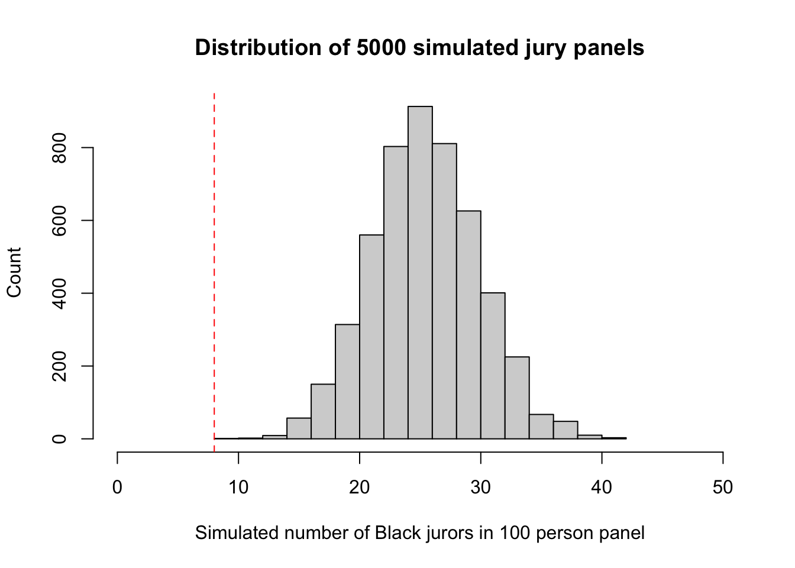

In this practical, we introduce the ideas of statistical simulation as a mechanism to investigate the behaviour of sampling distributions in a case study problem of jury selection. We’ll expand our R techniques to see how to write custom functions, to sample and generate random numbers, and how to repeat straightforward calculations an arbitrary number of times.
c,
seq,mean, sd,
var, min, maxhistsamplerbinomfunctionreplicate to repeatedly call a function with no
argumentsablineThe context of our problem today is concerns racial bias in the selection of a jury in a trial in 1965 Alabama, USA. In the early 1960s, in Talladega County in Alabama, a Black man called Robert Swain was convicted and was sentenced to death. At the time, only men aged 21 or older were allowed to serve on juries in Talladega County, where 26% of the eligible jurors were Black. Of the 100 jurors available in the jury panel, only 8 were Black and no Black man was selected for the jury of the actual trial itself.
Robert Swain appealed his sentence, citing among other factors the fact the jury at his trial was all White. Moreover, the appeal pointed out that all Talladega County jury panels for the past 10 years had contained only a small percent of Black panelists. Robert Swain was represented in the U.S. Supreme Court by Constance Baker Motley, the first African-American woman to argue a case in that Court. She argued 10 cases in the Supreme Court and lost only one – Robert Swain’s. The U.S. Supreme Court concluded, “the overall percentage disparity has been small” and that there was insufficient evidence of “invidious discrimination”.
But was this assertion reasonable? If jury panelists were selected at random from the county’s eligible population, there would be some chance variation. We wouldn’t get exactly 26 Black panelists on every 100-person panel. But would we expect as few as eight?
In this practical, we will use statistical simulation to investigate how plausible such an outcome would be, given the composition of the wider population of potential jurors.
Statistical simulation (or the Monte Carlo method) is a statistical technique where we artificially generate (“simulate”) data in order to explore sampling distributions, investigate the behaviour of statistical methods, and test hypotheses. These methods are particularly useful when the corresponding mathematical calculations are difficult or even impossible to do analytically. Of course, since our results are a product of how we set up the simulation we must take particular care in setting up the problem and interpreting what we find.
For this practical, we will use R and a bit of statistical thinking to examine the disparity between the 8 out of 100 Black men in the jury panel, the distribution of the actual jury, and the distribution in the population.
One view of the data – a model, in other words – is that the panel was selected at random and ended up with a small number of Black panelists just due to chance. Since the panel was supposed to resemble the population of all eligible jurors, the model of random selection is important to assess. Let’s see if it stands up to scrutiny.
We’re going to approach the problem as follows:
Under these assumptions, we can simulate or randomly generate possible jury panels consistent with random selection from this population. Our simulation will then show us what a panel would be like if it were selected at random, and we can then compare the results of the simulation with the composition of an actual jury panel. If the panel were truly selected at random then our simulated results should be close to those observed in Swain’s case. If the results of our simulation are not consistent with the composition of the panel in the trial, that will be evidence against our model assumptions (ie the model of random selection) and evidence of bias.
To begin with, we will simulate a jury using the sample
function:
The sample function allows us to take a sample of a
specified size from a vector of values, which is treated as the
population. The sample function has the following syntax, which you can
find by typing ?sample:
sample(x, size, replace = FALSE, prob = NULL)
The arguments to this function are:
x a vector of values representing the population to be
sampledsize the size of sample to take - in our case this is
\(n\)replace - whether to sample with replacement
(TRUE) or not (FALSE)prob - a vector of probabilities for the selection of
each element of x. If probabilities aren’t specified here,
then the elements of x are assumed equally likely.replace and prob are
given default values of FALSE and NULL. This
means that we don’t always have to specify a value, and R will assume
they take the defaults specified in the function definition if they are
not stated.
sample function and its arguments to:
c
function to create vectors from two or more constants.
Your code should return a vector of length 100, that will look something like the one below.
## [1] 0 0 0 0 0 0 0 0 1 1 0 0 0 0 1 0 0 1 1 0 0 0 1 0 0 0 1 0 0 0 0 0 0 0 1 1 0
## [38] 0 0 0 0 0 0 1 0 0 0 1 1 0 0 0 0 1 0 1 0 0 0 1 1 1 0 0 0 0 0 0 0 1 0 0 0 0
## [75] 0 0 0 0 0 0 0 0 0 1 0 0 0 0 1 1 0 1 1 0 0 0 1 0 0 0xsum of the elements of x to
find out how many Black jurors would be in your simulated jury
pool.As with other programming languages (such as Python), we can combine
multiple commands in R into our own custom functions that
perform more complicated tasks or calculations. Throughout the year, we
will be writing our own functions to solve specific problems and today
we will learn the basic syntax of how to create a function.
When creating a new function, it needs to have a name, probably at least one argument (although it doesn’t have to), and a body of code that does something. At the end it usually should (although doesn’t have to) return a value or object out of the function.
The general syntax for writing your own function is
name.of.function <- function(arg1, arg2, arg3=2) {
# function code to do some useful stuff
return(something) # return value
}name.of.function: is the function’s
name. This can be any valid variable name, but you should avoid using
names that are used elsewhere in R, such as mean,
function, plot, etc.arg1, arg2,
arg3: these are the arguments of the function. You
can write a function with any number of arguments, or none at all.
Essentially, this is the list of everything that is needed for the
name.of.function function to run. Some arguments have
default values specified, such as arg3 in our example,
which is set to 2 unless otherwise specified. Arguments
without a default must have a value supplied for the function to run.
You do not need to provide a value for those arguments with a default as
they are considered as optional, and when omitted the function will
simply use the default value in its definition.{} brackets is run every time the function is called. Note
that unlike Python where the code inside the function is
indented, with R the code inside the function must
be enclosed in curly braces {} and indenting has no
particular meaning (though it does make code more readable).return() or omits
the return statement entirely), whereas a function that
does a mathematical operation might return a number, or a vector.
For example, we can write a function to compute the sum of squares of two numbers as
sum.of.squares <- function(x,y) {
return(x^2 + y^2)
}and we can then evaluate
sum.of.squares(3,4)## [1] 25simulatePanel which has no
arguments, simulates a 100 person jury panel, and returns the number of
Black jurors it contains.
We now have a function to simulate a single jury panel. However, the essence of the Monte Carlo approach is to repeat this simulation process many many times and aggregate our results over many such simulations. To do this, we’ll need to repeatedly evaluate our new function.
replicate is a function that repeatedly executes a
fragment of code (an expression) a certain number of times. The
function and the number of times its called are its two arguments:
replicate(n, expr)
evaluates the code or expressions expr repeatedly
n times. For example, the following line of code will print
"Hello World" to the console ten times:
replicate(10, print("Hello world"))
If the expression expr returns a value, then
replicate combines the results together and returns them as
a single object.
replicate to call your simulatePanel
function to simulate the number of Black jurors on 5000 simulated jury
panels. Save the results to a variable called panels.
panels
represent?histogram of panels - how does this
compare to the observation of \(x=8\)?
A different (and simpler) way of viewing this problem is to recognise that we have all of the conditions for a binomial distribution here. If we let the number of Black jurors on the 100-person panel be \(X\), then if we’re sampling independently and randomly with fixed \(p=0.26\), then we should have that \(X\sim\text{Bin}(100, 0.26)\).
As you might expect from statistical software, R can directly generate random numbers from common distributions such as the binomial.
The rbinom function allows us to generate random
observations from a binomial distribution. Its syntax is
rbinom(n, size, prob)
The arguments to this function are:
n - how many random numbers to generate. Note this is
not the binomial sample size parameter \(n\)!size - the \(n\)
parameter of the binomial distribution to useprob - the probability of success \(p\).rbinom function to simulate \(X\), the number of Black jurors in a jury
panel of 100 individuals?We’ve now randomly simulated a large number of potential jury panels
consistent with this area in Alabama. Let’s do a little statistical
analysis on our results. You can use either the results from your own
function or rbinom - it shouldn’t matter which.
mean and variance of your
simulated \(X\)s.histogram of the values of \(X\). Does the shape of the histogram agree
with your expectation?
Let’s add the observed value of \(x=8\) for reference. To do this, we will likely need to modify our \(x\)-axis to have a larger range to ensure that 8 is visible within the plot range, and learn how to add lines to an existing plot.
To control the ranges of the horizontal and vertical axes, we can add
the xlim and ylim arguments to our original
plotting command. To set the horixontal axis limits, we pass a vector of
two numbers to represent the lower and upper limits,
xlim = c(lower, upper), and repeat the same for
ylim to customise the vertical axis. For example,
plot(x=1:10, y=1:10, xlim=c(-10,10), ylim=c(0,20))
We don’t have to specify axis limits, and when omitted R will figure out something sensible for us.
The axis limits for almost all of R’s plot functions can be set in this way.
It is often useful to add simple straight lines to lines to plots,
which can be achieved using the abline function.
abline can be used in three different ways:
h argument,
abline(h=3) draws a horizontal line at \(y=3\)v argument,
abline(v=5) draws a vertical line at \(x=5\)a and b arguments representing the intercept
and slope respectively; abline(a=1,b=2) draws the line at
\(y=1+2x\)abline can be customised using any of the usual colour
and line modifications using colour (col), line types and
widths (lty, and
lwd).
You should end up with a plot that looks a little like this: 
<= operator to test every element of
a vector.sum will treat all the values of TRUE in a
vector as 1 and FALSE as 0This is evidence that the model of random selection of the jurors in the panel is not consistent with the data from the panel. While it is possible that the panel could have been generated by chance, our simulation demonstrates that it is highly unlikely.
The reality of the trial panel is very much at odds with the model’s assumption of random selection from the eligible population. When the data and a model are inconsistent, then the model is hard to justify. After all, the data are real but the model is just a set of assumptions. When assumptions are at odds with reality, we must question those assumptions.
Therefore the most reasonable conclusion is that the either the proportion of eligible Black jurors in the population was far smaller than the 25% stated, or the assumption of a random selection mechanism is unjustified for this jury panel. As the proportion was not in doubt, the most reasonable conclusion is that the jury panel was not selected by random sampling from the population of eligible jurors. Notwithstanding the opinion of the Supreme Court, the difference between 26% and 8% is not so small as to be explained well by chance alone.
rbinom, and then use
your simulated panel to sample a simulated trial jury
without replacement. Revisit your analysis to see whether this affects
your conclusions.